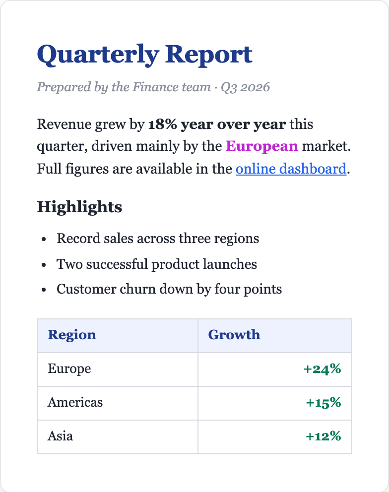
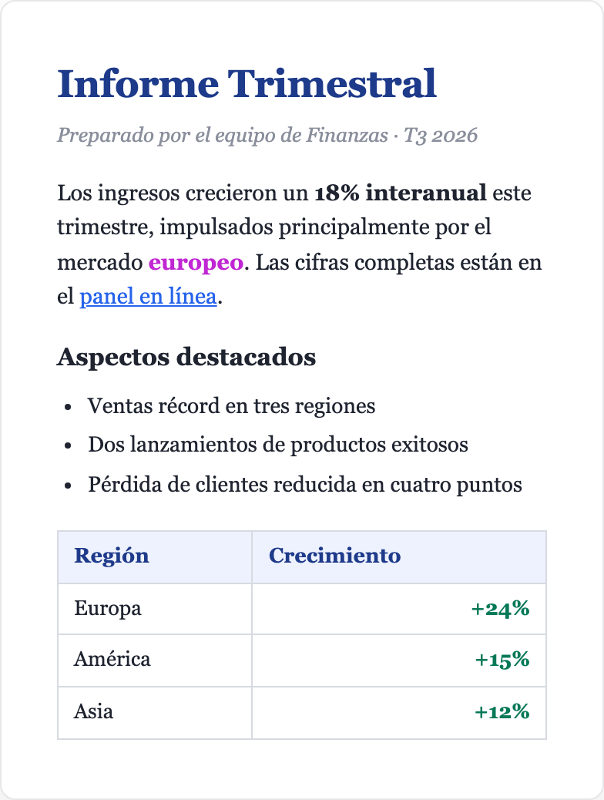

🔒
100% on-device
No cloud, no telemetry, no account. Your documents never leave your Mac.
📐
Formatting preserved
Bold, italic, hyperlinks, tables, images, fonts — every byte stays in place.
⚡
Metal-accelerated
Runs on Apple Silicon GPU via an on-device translation model.
📂
.docx · .xlsx · .pptx
Drag-and-drop a Word, Excel or PowerPoint file. Get a translated copy.
🌐
36 languages
1,056 translation directions. Auto-detects the source language.
🛡️
Sandboxed
Mac App Store sandbox; only reads files you choose.
See it in action


↓ Download the example (.docx)
Open it in Bobr Translate and translate it into any of 36 languages.
Supported languages
English中文繁體中文
粵語EspañolFrançais
Deutsch日本語한국어
РусскийالعربيةPortuguês
TürkçeไทยTiếng Việt
Bahasa IndonesiaBahasa Melayu
ItalianoNederlandsPolski
УкраїнськаČeštinaRomână
MagyarSvenskaDansk
NorskSuomiΕλληνικά
עבריתहिन्दीবাংলা
فارسیاردوதமிழ்
తెలుగు
How it works
- Drop a
.docx/.xlsx/.pptxfile into Bobr Translate. - Pick a target language (or let auto-detect handle the source).
- Bobr Translate parses the document, extracts text run-by-run, sends each paragraph through the on-device translation model with format-preservation tags.
- Translated runs are written back into the original positions, preserving every byte of formatting.
- A translated copy appears next to the original:
Report.ru.docx.